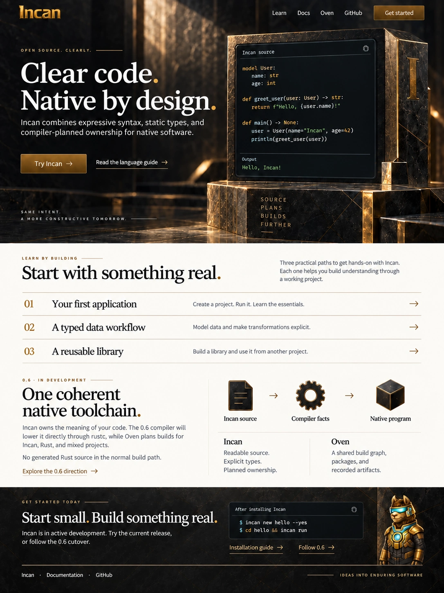

Option 2, revised.
Incan stands on its own: clear code, native by design. The workshop direction and Incus stay, with Rust ecosystem access and interop supporting the 0.6 toolchain story.
0.6 is in development. This is a static design proposal; “try Incan” refers to the current release.
